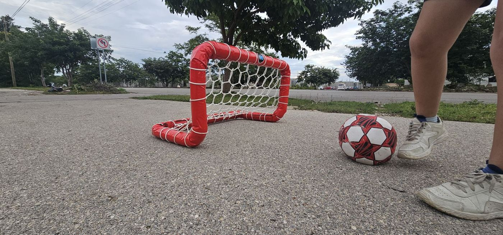
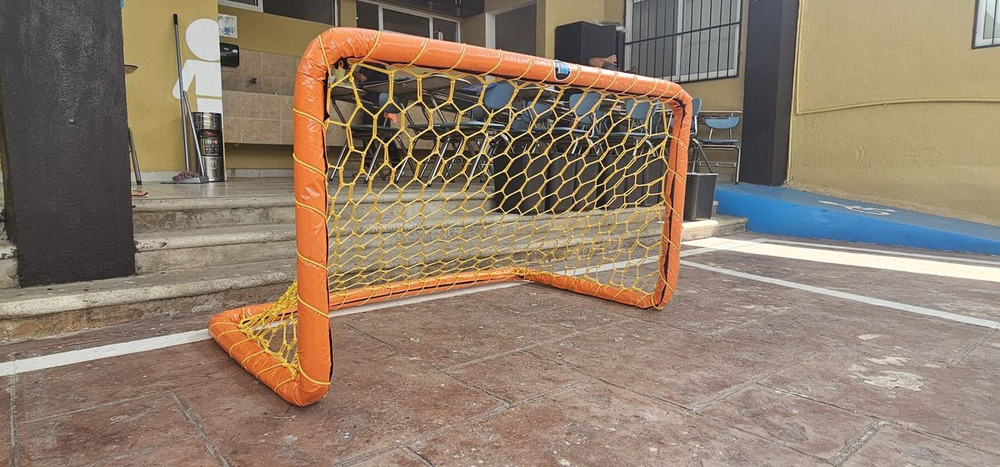

Las porterías pequeñas sirven para mucho más que el patio de la casa: entrenamientos de precisión, escuelas, academias, jardines y fiestas. Aquí están las medidas que manejamos y cómo elegir.
Medidas de nuestras porterías pequeñas
| Modelo | Ancho × alto |
|---|---|
| Mini | 0.75 × 0.50 m |
| Infantil (plegable) | 1.50 × 1.00 m |
| Juvenil | 2.00 × 1.50 m |
| Microbio | 3.20 × 1.80 m |
Si necesitas otra medida, también la hacemos. Para porterías más grandes revisa las medidas de una portería de fútbol profesional, de fútbol 7 y de fútbol rápido.
Cuál elegir
- Mini (0.75 × 0.50 m): para ejercicios de precisión, espacios reducidos y los más pequeños. Es la más fácil de mover y guardar.
- Infantil (1.50 × 1.00 m): para patios, jardines y escuelas. Es plegable.
- Juvenil y Microbio: para canchas infantiles y partidos con más jugadores.
Material: hechas para que nadie se lastime

- Estructura de tubo galvanizado, resistente a la intemperie.
- Cubierta acojinada de polifoam y lona, para evitar accidentes con golpes contra el tubo. La lona va en colores personalizados.
- Red deportiva artesanal en hexágonos, tejida a mano: la misma red tipo colmena de nuestras porterías grandes.
Qué mandarnos para cotizar
- El modelo o la medida.
- Si quieres una pieza o el par.
- Los colores de la cubierta y de la red.
- La ciudad de entrega.
Más modelos en porterías de fútbol.
Preguntas frecuentes
¿Cuánto mide una mini portería de fútbol?
Nuestra mini portería mide 0.75 × 0.50 m. También hacemos la Infantil de 1.50 × 1.00 m, la Juvenil de 2.00 × 1.50 m y la Microbio de 3.20 × 1.80 m.
¿De qué material son las mini porterías?
De tubo galvanizado con cubierta acojinada de polifoam y lona para evitar accidentes, con red deportiva artesanal en hexágonos.
¿Las mini porterías traen red?
Sí. Todas se entregan con red hexagonal tipo colmena tejida a mano.
¿Hacen mini porterías en colores?
Sí. La cubierta acojinada va en colores personalizados.